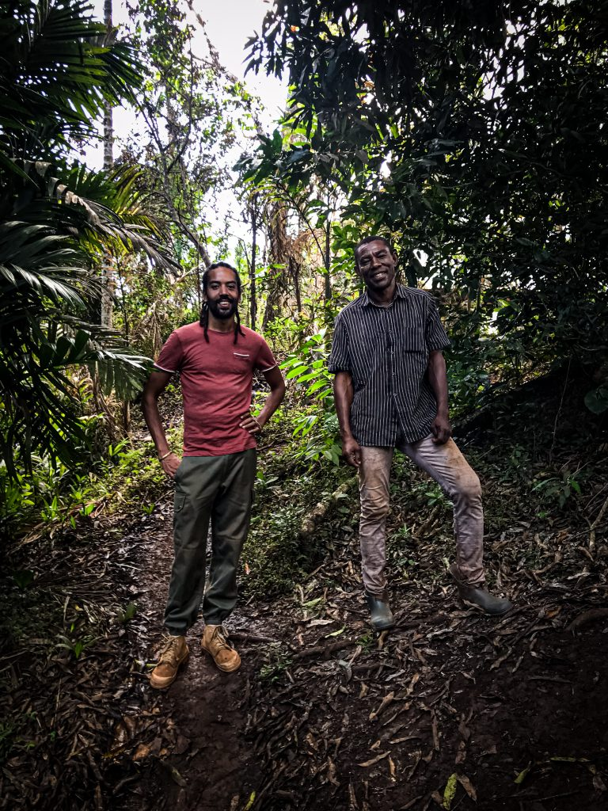

Nos fruits

toutes les saveurs de nos fruits sont bien suivit par des professionnels
Nos jus fait maison

Les jus fais maison de mayana. bio sont les meilleurs de tout pour une bonne rafraichissement de votre corps donc nous en faisent une vie cotidienne pour notre santer et notre bonheur.
planté par nos meilleur agriculteur

Les planteurs Saindou mlimi et Bacari mahamoudou sont les meneurs de notre cultivations de fruits de qualité.